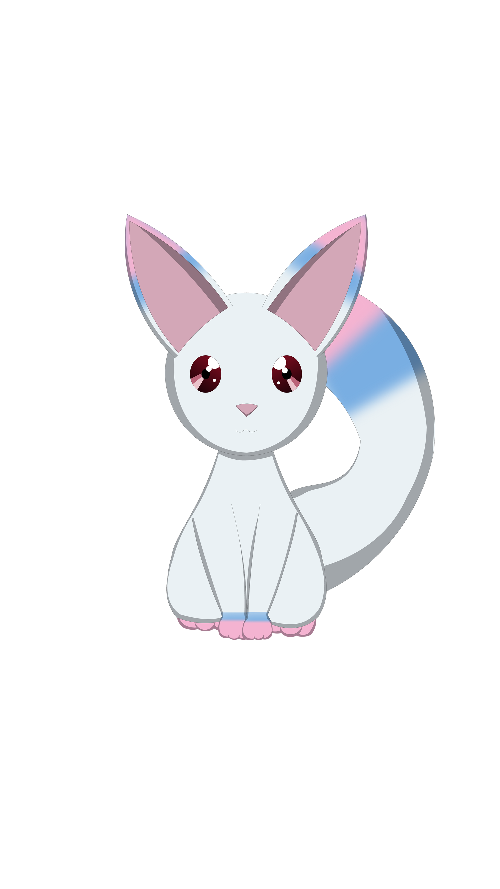
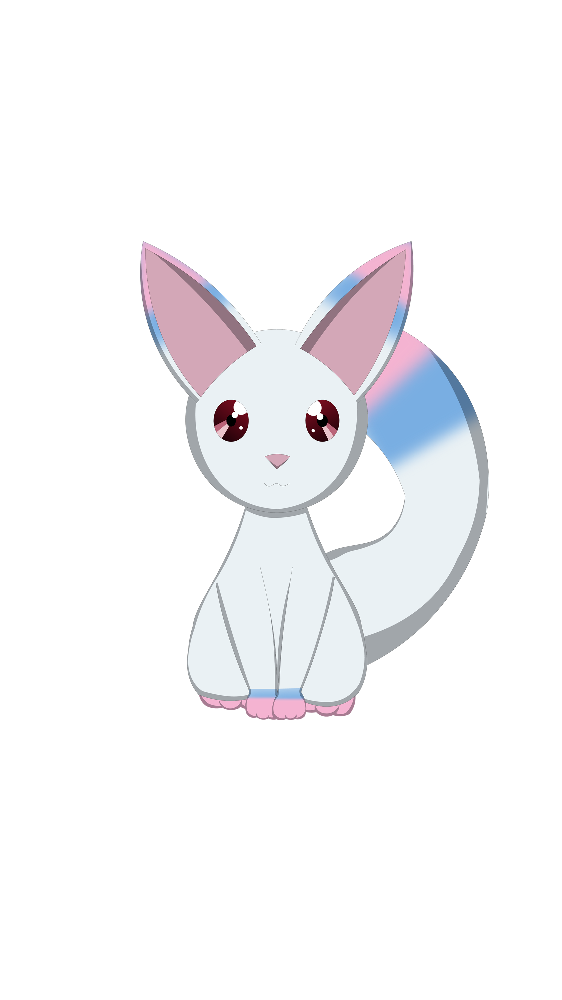

Episode 3
I ran upstairs as quickly as my legs would take me.
I could still hear my mother and brother yelling from down stairs, but I couldn't understand what they were saying anymore.
I knew it was about me.
I sat at my desk and pulled the drawer open.
(If I was gone, would everything be okay?)
As the thought came into my mind, I pulled a knife from the drawer.
It wasn't big, it was just a small cutter used for art projects, but maybe it would be enough...
*click* *click*
If I was dead, maybe, just maybe, everything would be fine...
I pushed the blade to my wrist.
I winced at the sharp pain.
Blood began to drip from the new wound forming just beneath the blade.
I took a deep breath.
-Mysterious Creature-Your heart is broken...
-Mysterious Creature-But that doesn't mean your life is over.
 

YuiW-who are you?
Mysterious CreatureI'm what some might call a kitsune.
White KitsuneI've been watching you.

YuiY-you've been watching me?
White KitsuneKids can be very cruel.
White KitsuneI don't have to tell you that though.
YuiWhat do you want from me?
White KitsuneYou misunderstand, Miss Yui Sakano. There isn't anything I want from you, rather, I have a gift for you.
YuiA gift?
White KitsuneYou have a hard life, but I can grant you the power to change that.
YuiPower?
White KitsuneYes, enough power for you to grasp all that you desire.

YuiTo grasp all that I desire?
White KitsuneYes, Miss Yui, whatever you want it will be within your power to get it. So, Miss Yui Sakano, what is it that you desire?
YuiI want my mom to be my mom again. I want everyone to stop picking on me at school...
YuiI want my dad back...
White KitsuneYou have a lot of potential, but I'm afraid it isn't enough to bring someone back to life or change the past.
YuiI'll be happy just as long as my mom goes back to how she was.
White KitsuneChanging a person is hard, but, if you can root out the reason she changed in the first place, I believe you can get her back.
White KitsuneIn other words, that's something I can give you the power to do.
White KitsuneSo, Miss Yui Sakano, will you make a contract with me?
YuiA contract?
White KitsuneYes. With a contract I'll be bound to help you, but, you must also help me.
YuiHelp you with what?
White KitsuneActually you'd be helping yourself too. It may help you discover what made your mom change.
YuiIs it dangerous?
White KitsuneI won't lie.
White KitsuneYou could be killed, but, as I see it, you'd probably end up dead if you didn't take the contract.
White KitsuneEven if it would be by your own hand.
YuiWhat!?
White KitsuneYou were just about to kill yourself, weren't you?
White KitsuneSo, Miss Yui Sakano, in order to potentially save your life, and make your life worth living, will you form a contract with me?
- So, Miss Yui Sakano, in order to potentially save your life, and make your life worth living, will you form a contract with me?
- O-okay